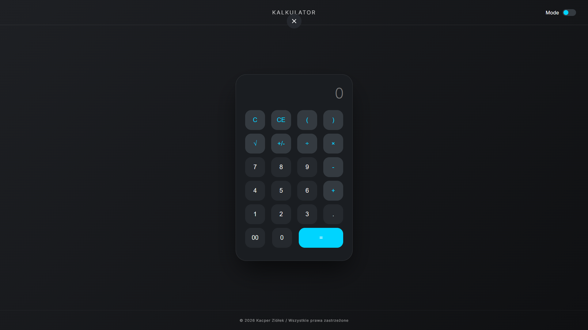
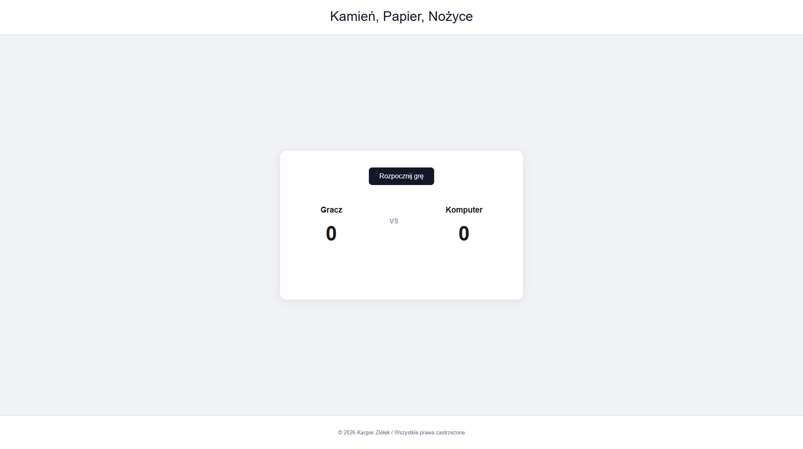
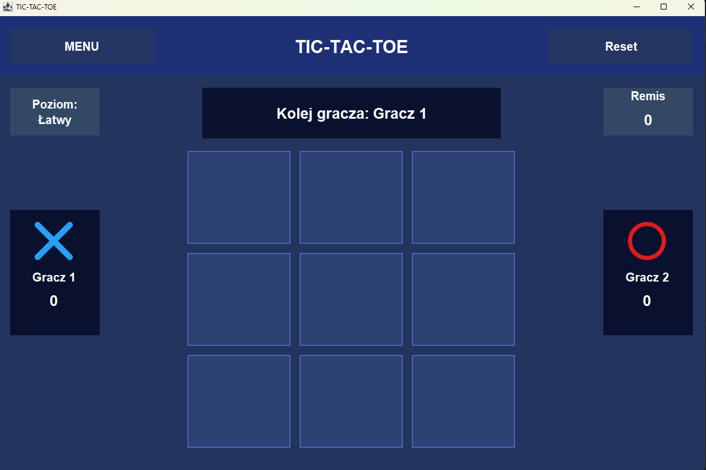

O mnie:
Cześć! Jestem absolwentem technikum informatycznego oraz studentem pierwszego roku informatyki na Polsko-Japońskiej Akademii Technik Komputerowych (PJATK). Interesuję się tworzeniem stron internetowych, stale rozwijam swoje umiejętności. Dodatkowo intensywnie uczę się języka Java, aby móc tworzyć również aplikacje desktopowe.
Moje umiejętności:
HTML
Znam dobrze podstawy HTML i potrafię wykorzystać wybrane zaawansowane zagadnienia. Pozwala mi to samodzielnie budować struktury stron internetowych oraz sprawnie diagnozować i naprawiać pojawiające się błędy. Tworzenie stron sprawia mi dużą satysfakcję i z chęcią rozwijam się w tej dziedzinie.
CSS
Posiadam solidne podstawy CSS, które stale poszerzam o nowe techniki. Dzięki temu potrafię tworzyć estetyczne i responsywne układy stron. Chętnie wdrażam też podstawowe animacje, które ożywiają witrynę i poprawiają doświadczenia użytkownika (UX).
JavaScript
Podobnie jak w przypadku HTML i CSS, opanowałem JavaScript na mocnym poziomie podstawowym. Wykorzystuję go do tworzenia interaktywnych i angażujących rozwiązań, które można przetestować w moich zrealizowanych projektach.
Java
Obecnie intensywnie uczę się języka Java i stale rozwijam swoje kompetencje. Język ten bardzo mnie fascynuje i widzę w nim duży potencjał. Aktualnie w ramach ćwiczeń skupiam się na pisaniu mini-gier w postaci aplikacji okienkowych (desktopowych).
SQL
Posiadam podstawową wiedzę z zakresu baz danych MySQL. Obejmuje to tworzenie i modyfikację struktury tabel oraz sprawne operowanie na danych za pomocą zapytań SQL.
Projekty:
Poniżej przedstawiam moje dotychczasowe realizacje. Są to głównie interaktywne strony internetowe, w których w praktyce wykorzystuję język JavaScript. W moim portfolio znajdują się proste narzędzia, klasyczne gry przeglądarkowe z dynamiczną zmianą wyglądu. Aktualnie pracuję również nad mini-grą w postaci aplikacji okienkowej (desktopowej) w języku Java.

Kalkulator
Nowoczesna aplikacja webowa łącząca w sobie klasyczny kalkulator matematyczny oraz dynamiczny przelicznik walut, który na bieżąco pobiera aktualne kursy z API Narodowego Banku Polskiego. Projekt wyróżnia się wysoką dbałością o User Experience, oferując pełną obsługę za pomocą klawiatury fizycznej, wbudowany przełącznik Dark/Light Mode oraz płynne przejścia między trybami. Całość została stworzona w oparciu o czysty kod, z zachowaniem modularnej struktury plików i wykorzystaniem nowoczesnych wzorców asynchronicznych w JavaScript.
Technologie:
- HTML5
- CSS3
- JavaScript

Kamień, Papier, Nożyce
Klasyczna przeglądarkowa minigra stworzona w czystym JavaScript, HTML5 i CSS3, bez wykorzystania zewnętrznych bibliotek. Aplikacja wyróżnia się płynnym, responsywnym interfejsem, który dzięki sprawnej manipulacji obiektem DOM dynamicznie aktualizuje ekran rozgrywki bez konieczności przeładowywania strony. Użytkownik rywalizuje z komputerem podejmującym losowe decyzje, a każda partia wzbogacona jest o czytelną wizualizację wyborów, kolorowe komunikaty zwrotne oraz system punktacji na żywo.
Technologie:
- HTML5
- CSS3
- JavaScript

Kółko i Krzyżyk
Interaktywna gra desktopowa napisana w Javie z wykorzystaniem Java Swing. Projekt oparty na programowaniu obiektowym, z wyraźnym rozdzieleniem logiki gry i interfejsu użytkownika. Aplikacja oferuje tryb gry lokalnej oraz rozgrywkę przeciwko komputerowi z dwoma poziomami trudności, w tym zaawansowaną analizą ruchów. Dodatkowo zawiera system śledzenia wyników w czasie rzeczywistym oraz interfejs w trybie Dark Mode.
Technologie:
- Java (Logika obiektowa)
- Java Swing (Interfejs graficzny)
Kontakt:
Zainteresowały Cię moje projekty? Szukasz osoby do swojego zespołu lub masz do mnie pytanie? Zapraszam do kontaktu!